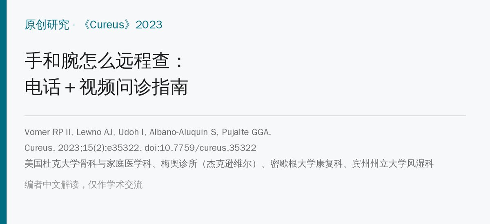
🔖原文信息（编者中文重排）
📚 文献信息
▪ Vomer RP II, Lewno AJ, Udoh I, Albano-Aluquin S, Pujalte GGA. Evaluation of the hand and wrist via telephone and video visit. Cureus. 2023;15(2):e35322. doi:10.7759/cureus.35322
▪ 作者单位：美国杜克大学骨科与家庭医学科、梅奥诊所（杰克逊维尔）、密歇根大学康复科、宾州州立大学风湿科
▪ 文章类型：期刊归为原创研究，实际是作者经验整理的操作指南（示范模特是第一作者本人，没有验证数据）。和前两篇肘、髋远程评估出自同一团队
• 手和腕结构小、位置表浅，视频里看得很清楚；难点是腕部结构挤在一起，患者指的痛点要医生对着解剖仔细核对
• 顺序：视诊 → 握拳和张手 → 自我触诊 → 活动度 → 抗阻 → 按桡侧、尺侧、神经分区做特殊检查；永远和健侧比
• 先问有没有外伤，有外伤先排除骨折；怀疑舟骨骨折时不要做 Watson 试验，以免骨折块移位
• 视频还有个额外好处：能直接看到患者家里的电脑和工位，当场给人体工学建议
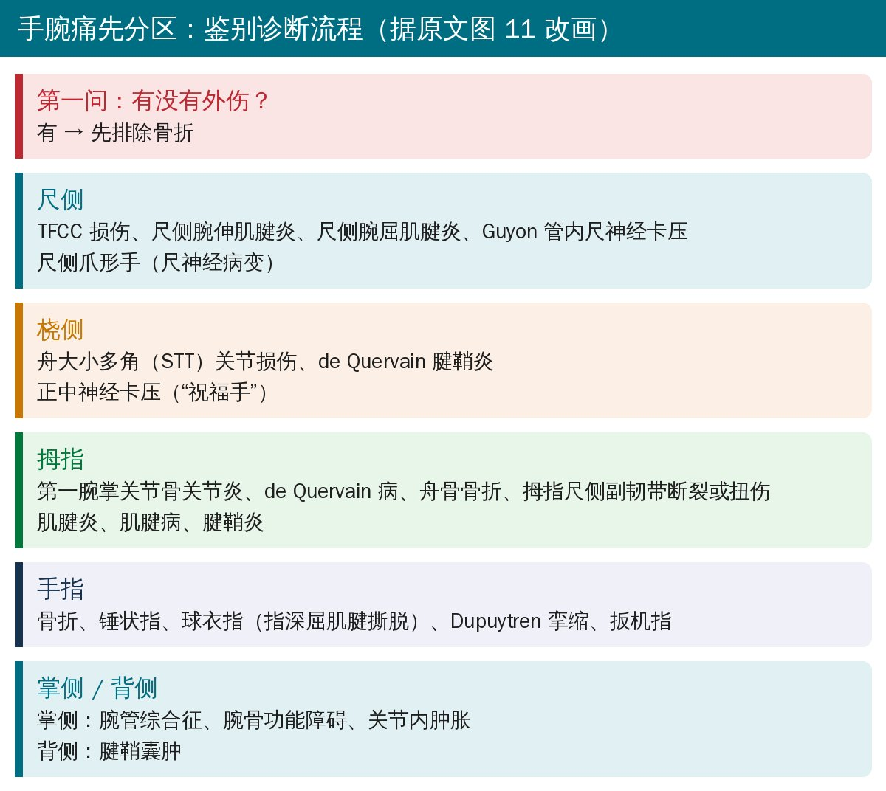
🔖鉴别诊断流程（据原文图 11 改画成中文）
• 让患者面对镜头坐好，先看手腕的掌侧、背侧、尺侧和桡侧
• 和健侧比：力线异常、萎缩、肿胀、淤青、苍白、伤口、静脉怒张；腕背仔细找腱鞘囊肿
• 请患者把在意的包块或隆起对着镜头，和对侧比较
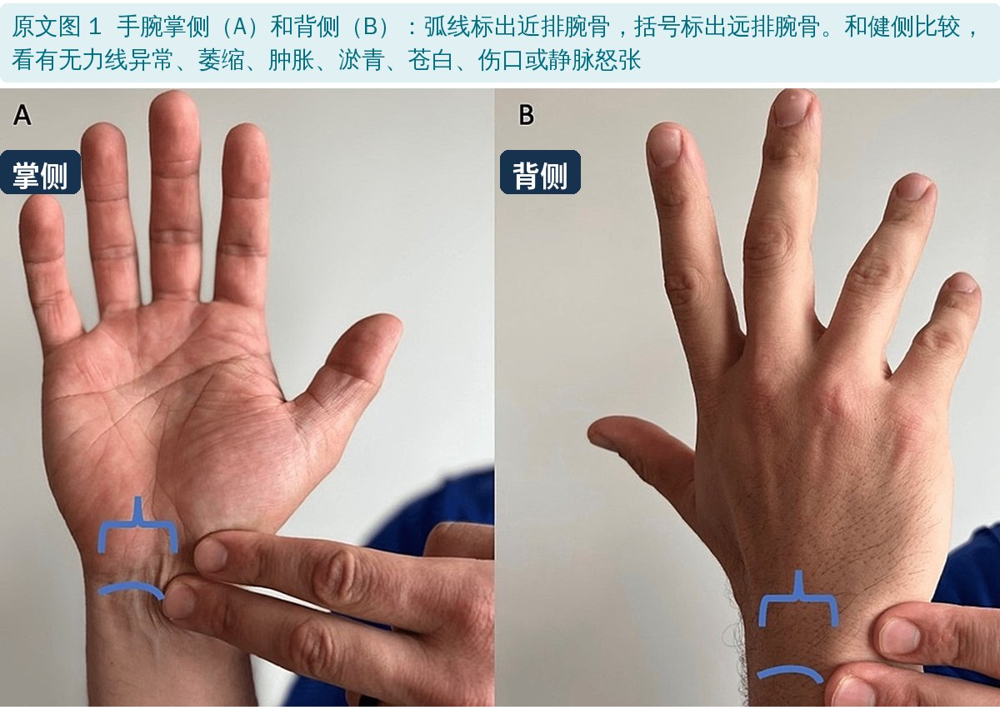
🔖原文图 1：手腕掌侧和背侧
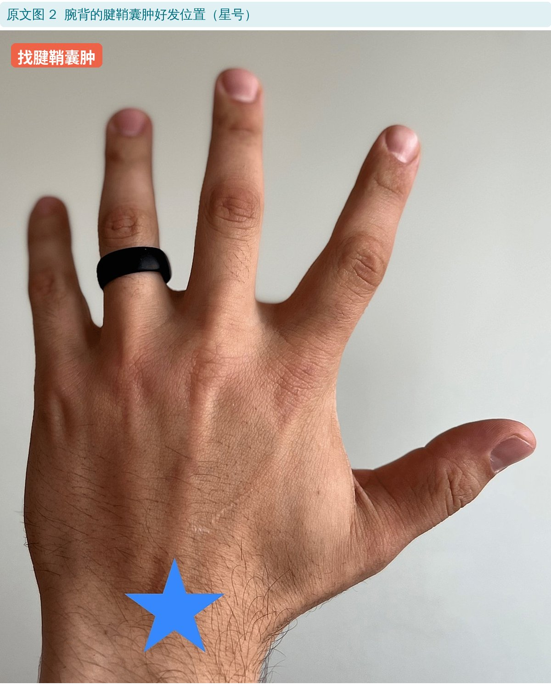
🔖原文图 2：腕背腱鞘囊肿好发处
• 握拳：掌骨头是否连成一条平滑的弧；指尖能否碰到手掌；各指是否都指向拇指根部（舟骨方向）——偏离提示骨折或损伤
• 仔细看握拳和张手的过程：握拳时示、中指握不拢，原文认为提示骨间前神经损伤（“祝福手”）；张手时环、小指伸不直，提示尺神经病变（尺侧爪形手）
• 不能做“OK”手势（拇指和示指圈不成圆），要怀疑骨间前神经损伤
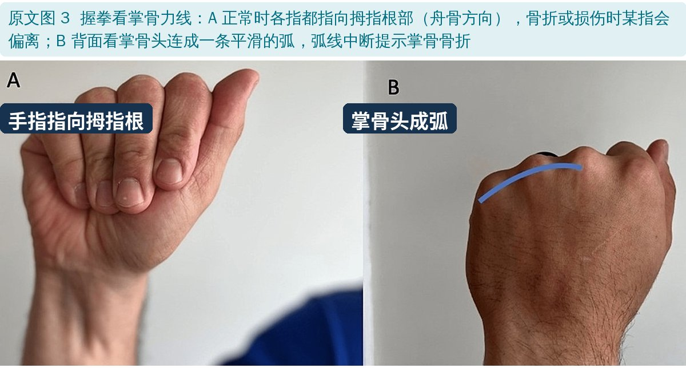
🔖原文图 3：握拳看掌骨力线
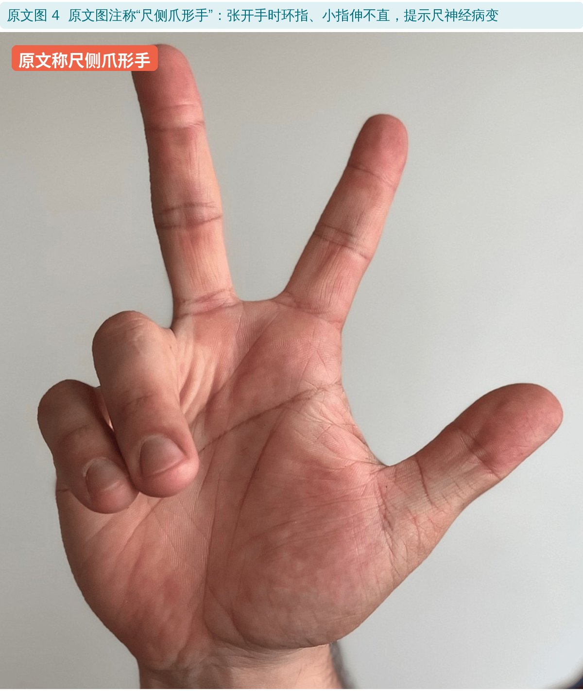
🔖原文图 4：原文称“尺侧爪形手”
腕部结构挤在一起，指导患者按哪里不容易；患者指出的痛点要对照解剖结构仔细核对。重点部位：
• 腕骨（尤其舟骨）、鼻烟窝、下尺桡关节、桡骨茎突、尺骨茎突、拇指腕掌关节
• 伸肌腱：Lister 结节处的拇长伸肌腱、尺侧腕伸肌腱
• 尺骨小凹处的 TFCC、各掌骨、钩骨钩、尺侧和桡侧腕屈肌
活动度先主动、必要时再被动，和健侧比；抗阻测试找无力或疼痛。
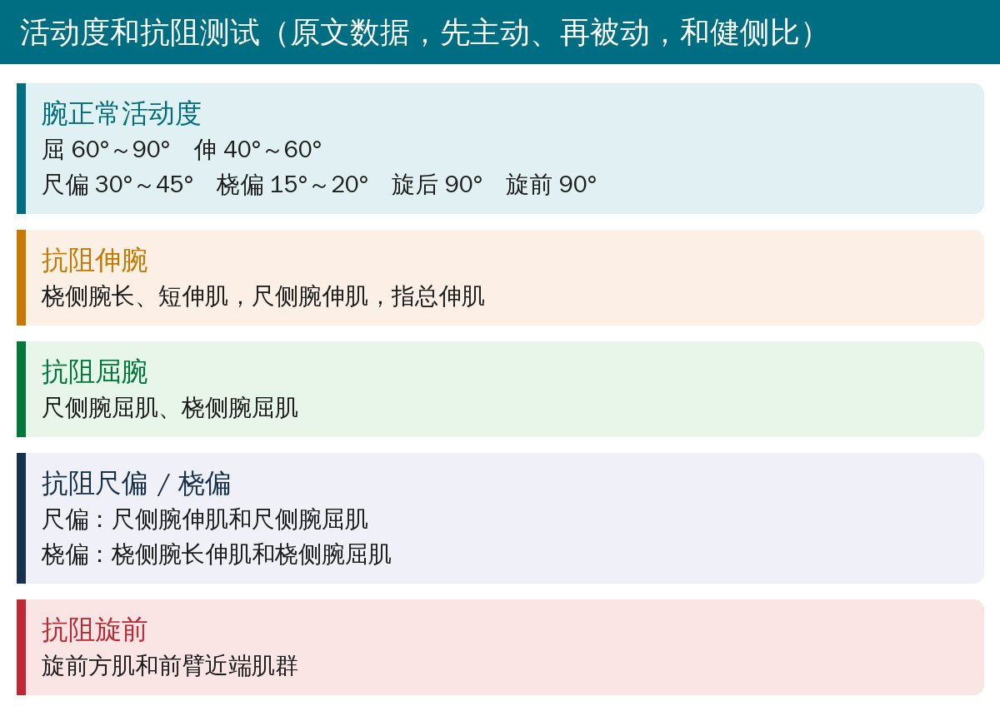
🔖活动度和抗阻测试（原文数据）
• 让患者按桡骨茎突、各伸肌间室、下尺桡关节、腕骨（尤其舟骨）、腕掌关节和掌骨
• 查感觉：手背的桡神经浅支、手掌侧的正中神经
• 动拇指或抓握时痛，做腕掌关节研磨试验：痛提示拇指腕掌关节或舟大小多角（STT）关节骨关节炎
• Finkelstein 试验：拇指握在拳内、腕向尺侧偏，痛或无力提示 de Quervain 腱鞘炎
• 改良 Watson 试验：按住舟骨，同时腕从尺偏移到桡偏，痛或“咔噔”提示舟月不稳。怀疑舟骨骨折时不要做
• 握手或抓握时无力（伴或不伴痛），提示腕骨损伤或腕不稳
• 拇指尺侧副韧带：稳住掌指关节、把拇指向桡侧扳，和健侧比间隙增大提示韧带损伤；摔倒后拇指尺侧痛就要查
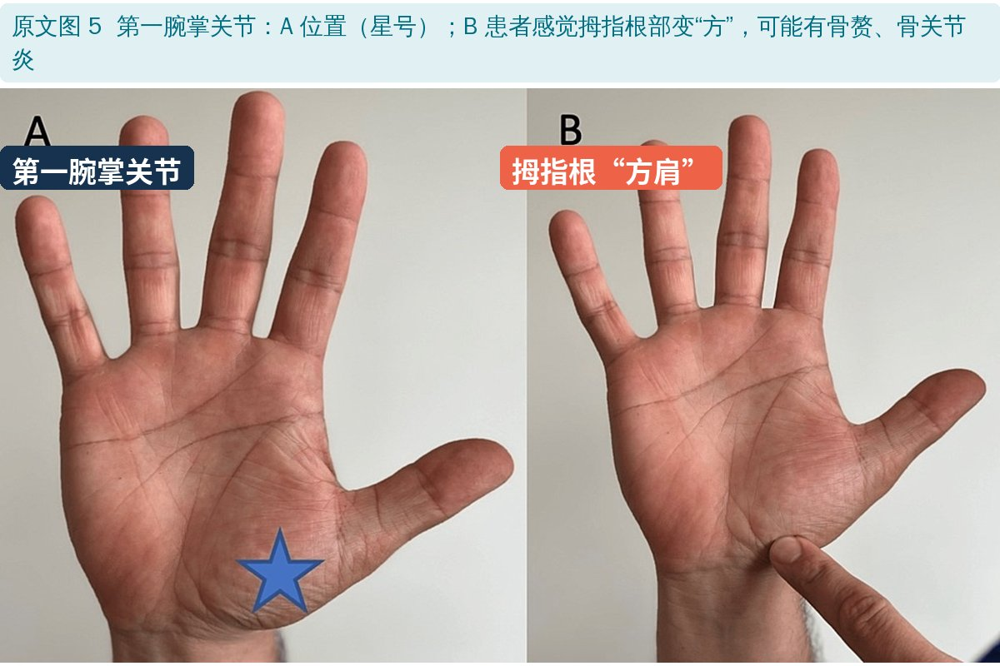
🔖原文图 5：第一腕掌关节
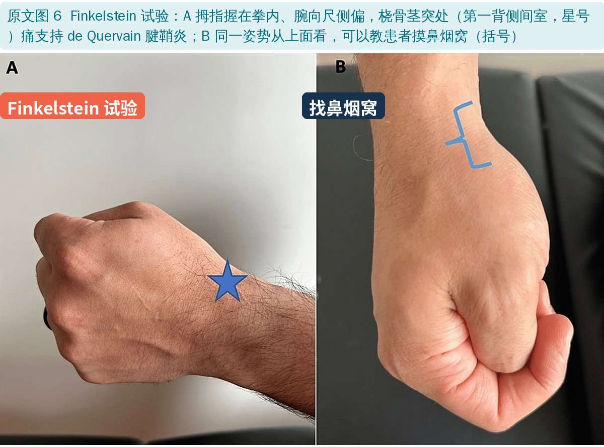
🔖原文图 6：Finkelstein 试验和鼻烟窝
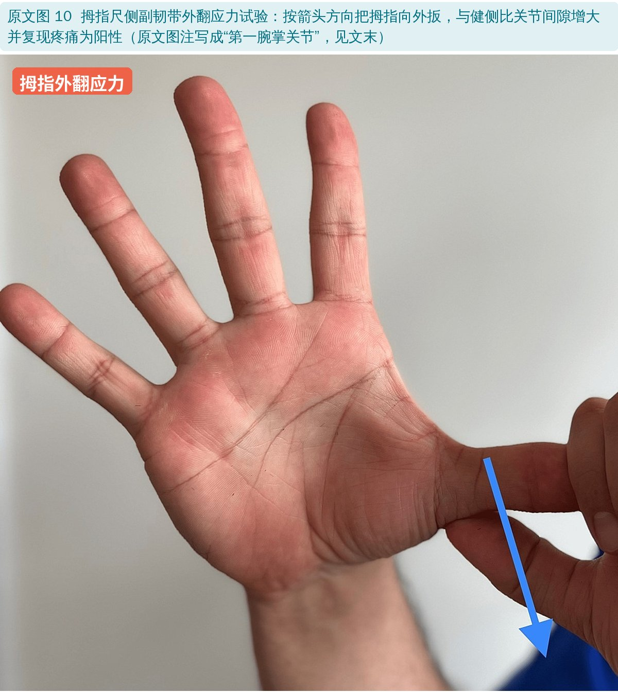
🔖原文图 10：拇指尺侧副韧带外翻应力试验
• 让患者按尺骨茎突、尺侧腕伸肌腱、尺骨小凹和腕骨
• Guyon 管按压痛、持续按压复现症状 → 尺神经在腕部受压；尺侧有外伤史或反复撞击钩骨钩的，还要想到小鱼际锤击综合征（尺动脉损伤）
• 查环指、小指掌侧的感觉
• 尺偏时腕横纹处痛、按尺骨小凹痛、推东西时腕尺侧痛 → TFCC 损伤
• 旋前旋后时腕横纹尺侧痛或无力 → 尺侧腕伸肌腱病；同时有弹响或滑动感，常伴软组织肿胀 → 尺侧腕伸肌腱半脱位
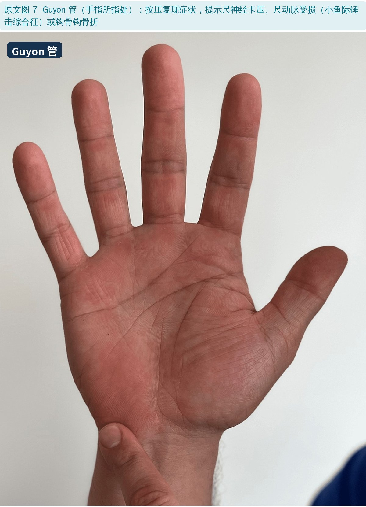
🔖原文图 7：Guyon 管
• 腕管综合征：按压腕横纹（Durkin 试验）或叩击（Tinel 征）出现痛或麻；Phalen 试验（手背相贴、手指朝下）复现症状进一步支持
• 桡神经浅支卡压：表带收紧时腕背痛或麻；没有手表就用另一只手紧握手腕模拟
• Allen 试验：握拳后请人压住腕两侧的桡、尺动脉，松开后手掌回红慢，提示掌动脉弓供血问题
• 手指连带手臂烧灼感或麻木，按分布判断正中、尺、桡神经，并让患者做 Spurling 试验排除颈神经根
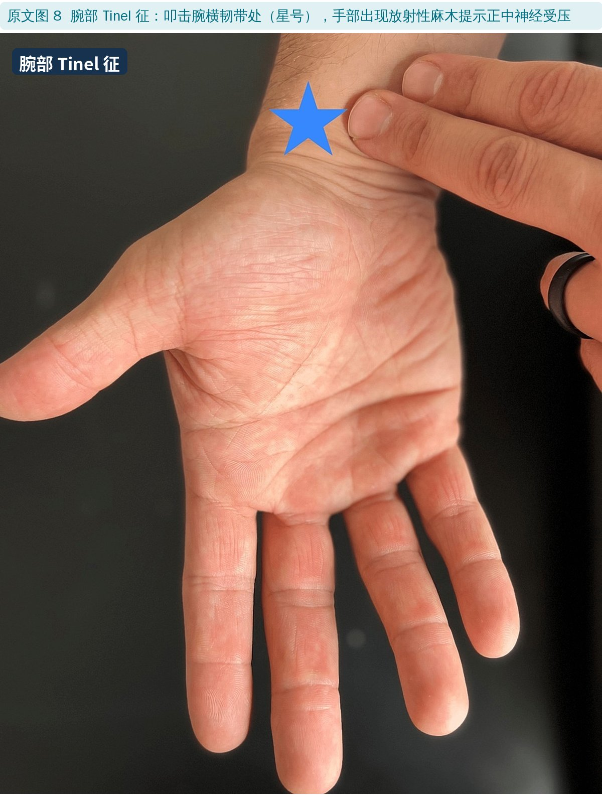
🔖原文图 8：腕部 Tinel 征
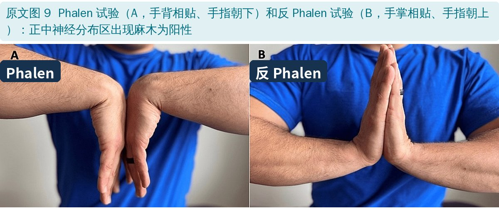
🔖原文图 9：Phalen 和反 Phalen 试验
原文表 1 把每项检查改写成了患者听得懂的问题。编者按部位整理成两张卡：
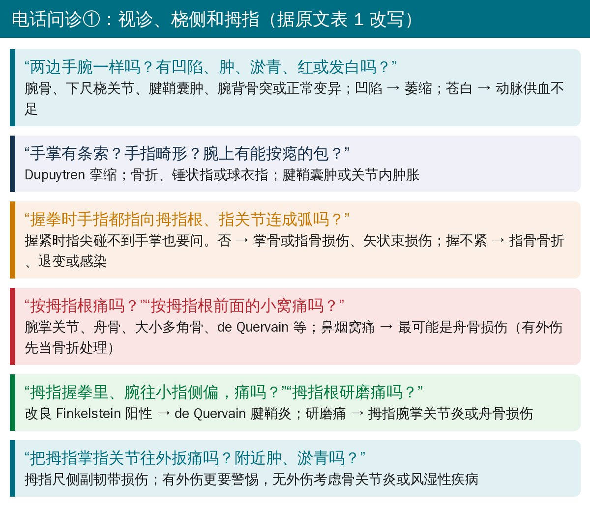
🔖电话问诊①：视诊、桡侧和拇指（据原文表 1 改写）
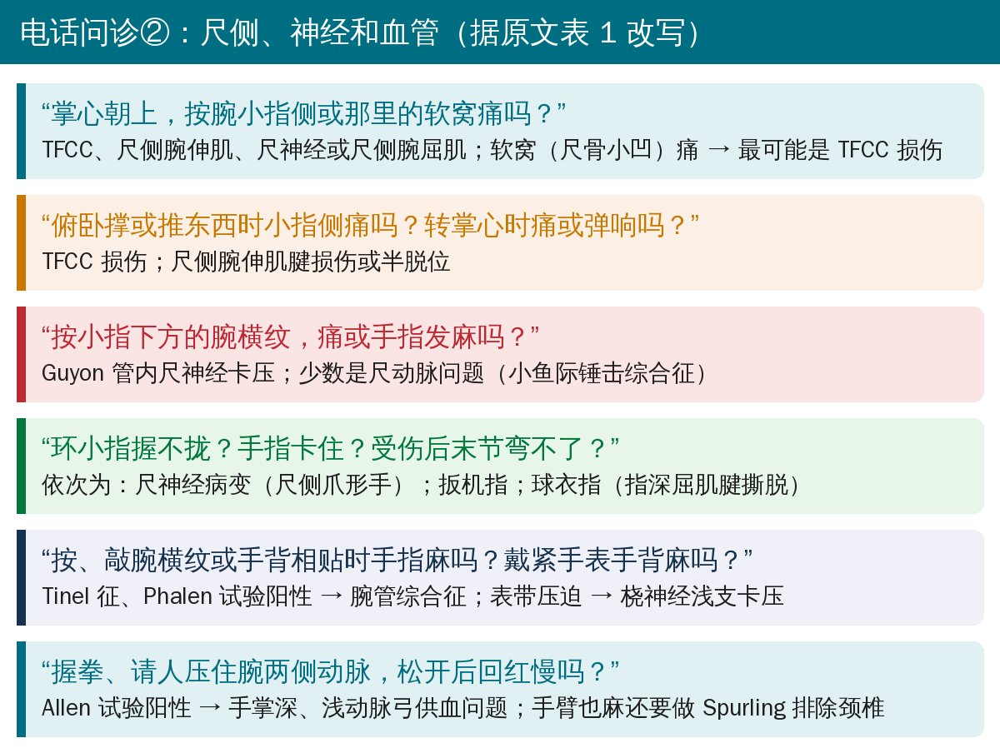
🔖电话问诊②：尺侧、神经和血管（据原文表 1 改写）
其他要问的：“摔倒后开始痛的吗？”（按受伤方式和畸形想骨折）；“张手时某个手指卡住吗？”（扳机指）；“受伤时手指‘啪’一下，末节弯不了吗？”（球衣指）；“什么事因为手腕痛、没劲或活动受限做不了？”（让患者在电话里复现动作并描述）。
• 期刊归为原创研究，但没有受试者也没有数据；作者说以后会做验证研究，目前所有远程检查都没有信度、效度数据
• 电话问诊只能靠患者自述；视频能看，但摸不到，对医生的指导能力要求高
• 优点：覆盖手腕各分区和常见神经卡压，问题口语化，流程图能直接拿来分诊
• “祝福手”归错了神经：原文说握拳时示、中指握不拢提示骨间前神经损伤（祝福手），流程图又把“祝福手”归到“正中神经卡压”。祝福手通常是肘部或更近端的正中神经损伤；骨间前神经损伤的典型表现是做不成“OK”手势，原文另一处也这样写
• 拇指尺侧副韧带的关节写错：正文写“稳住掌指关节、把拇指远节向桡侧扳”，图 10 图注又说是让第一腕掌关节张开。拇指尺侧副韧带在掌指关节，应稳住掌骨、扳近节指骨
• 从肘关节那篇抄过来的“肘”：表 1 两处写“回答可能提示肘部的力量问题”，举的例子却是手腕拇指侧痛、握不住车把
• 表 1 分栏放错：“力量测试”一栏下面列的全是尺侧按压痛的问题，并不是力量测试
• 图号引错：表 1 推东西时腕尺侧痛写“见图 7”，图 7 是 Guyon 管；正文说“图 2～11 演示了表 1 的动作”，但图 11 是流程图
• 不存在的骨间肌：表 1 说麻木“在第 4、5 掌侧骨间肌处提示尺神经”，掌侧骨间肌只有 3 块（也有算 4 块的），而且骨间肌也不是感觉分布区
• 琴键试验：表 1 说用琴键试验查 TFCC 撕裂，琴键试验主要查的是下尺桡关节不稳
• 流程图拼写：“compliant”（应为 complaint）、“Unlar claw”、“osetoarthritis”、“Tendititis”；正文还有“Sensor testing”、“extensor carpi radialis longus/radialis”等笔误
• 伦理声明：写着“梅奥诊所杰克逊维尔院区批准：无”，又说不需要伦理审批
• 视频前请患者露出双手双腕、把手机架稳，最好有人帮忙；准备一块手表方便做表带试验
• 先问外伤、再看握拳和张手，最痛点在哪一侧基本决定后面查什么
• 鼻烟窝痛＋外伤先按舟骨骨折处理，安排拍片，不要做 Watson 试验
• 对伏案工作的人，顺便看看他的桌椅、键盘、鼠标摆放，远程给出人体工学建议
欢迎关注骨科康复小黄公众号，获取更多物理治疗的专业知识！
📄参考文献：
Vomer RP II, Lewno AJ, Udoh I, Albano-Aluquin S, Pujalte GGA. Evaluation of the hand and wrist via telephone and video visit. Cureus. 2023;15(2):e35322. doi:10.7759/cureus.35322
原文以知识共享署名 4.0（CC BY 4.0）协议开放获取。原文图 1～10 引自原文，中文标签为编者所加；原文图 11 流程图由编者改画为中文；活动度卡和电话问诊卡据原文正文和表 1 整理改写。